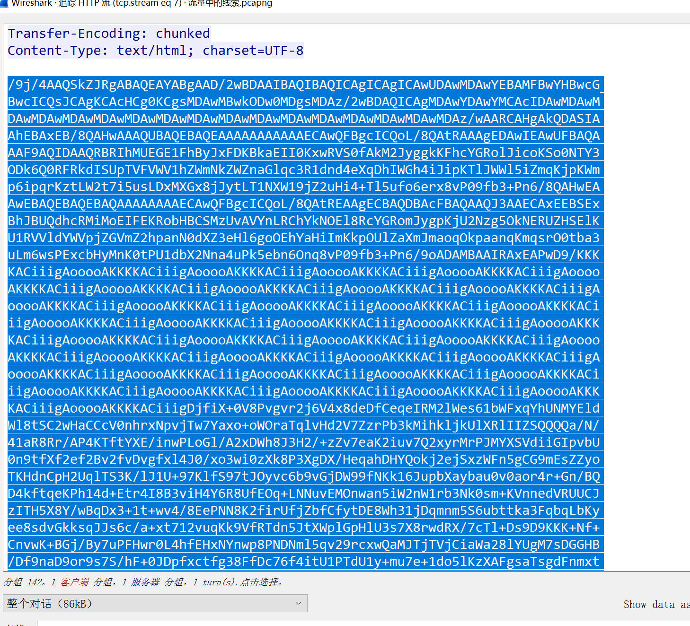

- ningen
- 小明的保险箱
- 爱因斯坦
- easycap
- 另外一个世界
- 隐藏的钥匙
- FLAG
- 假如给我三天光明
- 神秘龙卷风
- 后门查杀
- 数据包中的线索
- 荷兰宽带数据泄露
- 来首歌吧
- webshell后门
- 面具下的flag
- 九连环
ningen
binwalk分离jpg文件，得到压缩包。根据描述爆破4位数字直接出
flag{75a3d68bf071ee188c418ea6cf0bb043}
小明的保险箱
binwalk分离jpg文件，得到压缩包。根据描述爆破4位数字直接出
flag{b025fc9ca797a67d2103bfbc407a6d5f}
爱因斯坦
binwalk分离jpg文件，得到压缩包。
在到图片的描述里找到密码，解压出flag
flag{dd22a92bf2cceb6c0cd0d6b83ff51606}
easycap
直接追第一个包就看到flag了
flag{385b87afc8671dee07550290d16a8071}
另外一个世界
末尾看到2进制数，转成asciiflag{koekj3s}
隐藏的钥匙
010editor里直接搜flag。搜到一串bsae64加密的。在unknownpadding块里
flag{377cbadda1eca2f2f73d36277781f00a}
FLAG
lsb低位隐写，stegsolve查看没特征，上zsteg发现zip file
提出来发现文件损坏，不过也可以解压
假如给我三天光明
对照盲文表翻译出来解密
kmdonowg
wav明显的morse
翻译出来的CTFWPEI08732null23DZ，转小写，在把前面的ctf变成flag
flag{wpei08732?23dz}
神秘龙卷风
爆破出密码5463
brainfuck网站，多找几个试试。有的网站解不出来
https://www.splitbrain.org/services/ookflag{e4bbef8bdf9743f8bf5b727a9f6332a8}
后门查杀
d盾扫一下，找到密码。flagflag{6ac45fb83b3bc355c024f5034b947dd3}
数据包中的线索
http里找到base64的图片，转回来

荷兰宽带数据泄露
bin文件，可以尝试用routerpassview打开。看user和pass
来首歌吧
audacity打开，moese翻
1 | ..... -... -.-. ----. ..--- ..... -.... ....- ----. -.-. -... ----- .---- ---.. ---.. ..-. ..... ..--- . -.... .---- --... -.. --... ----- ----. ..--- ----. .---- ----. .---- -.-. |
flag{5BC925649CB0188F52E617D70929191C}
webshell后门
d盾扫一波有又是pass
flag{ba8e6c6f35a53933b871480bb9a9545c}
面具下的flag
binwalk分离出zip，伪加密的zip。
分出一个vmdk文件，windows下7zip可以直接打开看，但这题只能linux下使用7z。因为这边linux下7z可以直接还原出ntfs的文件，但windows下解压出来是没有ntfs流文件的。
一串ook，一串brainfuck解密出来，两串拼进去flag{N7F5_AD5_i5_funny!}
九连环
常规binwalk分出文件。又是一个伪加密，分出一张jpg和zip（带锁）。
jpg16进制下无信息，尝试常规加密工具。steghide尝试出空密码解压出ko.txtflag{1RTo8w@&4nK@z*XL}